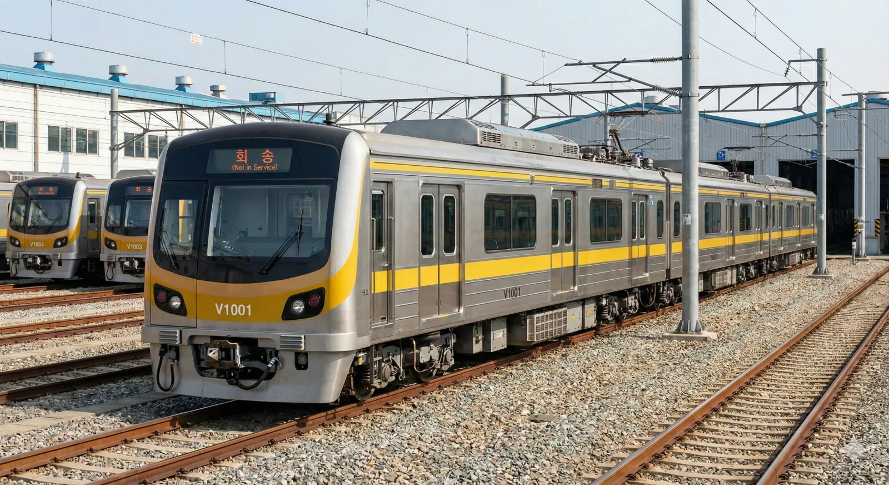
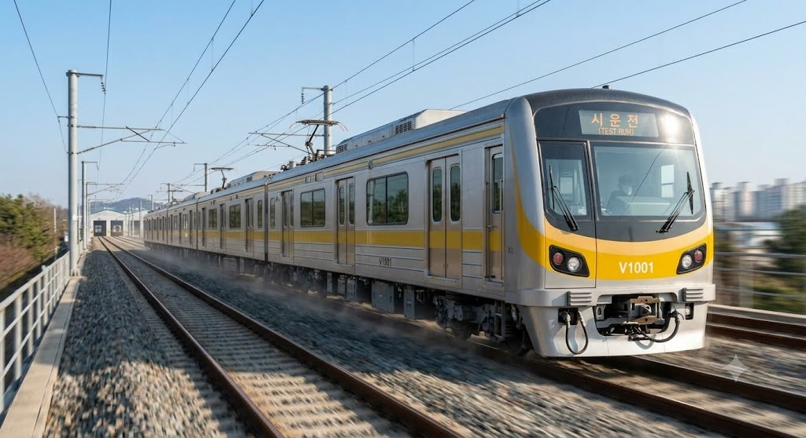

빈주 도시철도 1호선
|
|||
|
  빈주도시철도공사 1000호대 전동차
|
|||
| 노선도 | |||
|---|---|---|---|
|
[ 펼치기 · 접기 ]
|
|||
| 노선 정보 | |||
| 노선 분류 | 도시철도 | ||
| 차량 분류 | 중형 중전철 | ||
| 기점 | 동원역 | ||
| 종점 | 상만역 | ||
| 역 수 | 22개 (본선 기준) | ||
| 구성 노선 | 빈주 도시철도 1호선 | ||
| 상징색 | 황금색 (#CFBA0F) | ||
| 개통일 | 2016년 6월 13일 | ||
| 소유자 | 빈주시 | ||
| 운영사 | 빈주도시철도공사 | ||
| 사용차량 | 빈주교통공사 1000호대 전동차 | ||
| 차량기지 | 동원차량사업소 | ||
| 노선 제원 | |||
| 노선연장 | 17.4km | ||
| 궤간 | 1,435mm (표준궤) | ||
| 선로구성 | 복선 | ||
| 급전방식 | 직류 1,500V 가공전차선[1]일부 구간에서는 강체 가선 방식을 혼용하여 사용한다. | ||
| 신호방식 | RF-CBTC (ATO 유인운전) | ||
| 최고속도 | 80km/h | ||
| 표정속도 | 32.4km/h | ||
| 지상구간 | 동원 | ||
| 통행방향 | 우측통행 | ||
| 개통 연혁 |
2016. 06. 13. 동원 ↔ 상만 개통 |
||
1. 개요
"빈주의 찬란한 시작, 황금빛 1호선"
덕빈북도 빈주시를 동서로 관통하는 첫 번째 도시철도 노선이자, 명실상부한 빈주시 대중교통의 절대 척추이다.
빈주도시철도공사가 운영 및 관리를 도맡고 있으며, 노선 색상은 빛나는 황금색(#CFBA0F)이다.
누구 덕분에 동네방네 하나마루색이라고 더 많이 불리고 있다. 즈라선
2. 건설 목적
빈주시는 전통적인 구도심이자 상권의 중심인 빈성구, 덕빈북도청이 이전해 오며 형성된 행정타운 가원구, 그리고 90년대 후반부터 무섭게 폭발적으로 팽창한 거대 베드타운 겸 학원가 신도시 장기구로 나뉘어 있다. 문제는 이 3개 구를 동서로 잇는 도로망, 특히 '빈주대로'가 인구 증가 속도를 전혀 따라가지 못했다는 점이다.[2]당시 도로 확장 공사마저 지지부진하여 시민들의 불만이 극에 달해 있었다.
아침 출근 시간만 되면 장기구에서 가원구 도청으로 출근하는 공무원 차량들과, 빈성구 빈주역으로 향하는 셔틀버스, 직장인 자가용들이 한데 엉켜 빈주대로 전체가 길이 수 킬로미터짜리 거대한 주차장으로 변모하는 헬게이트가 일상이었다. 비라도 오는 날이면 장기구에서 빈성구로 넘어가는 데만 1시간 반이 걸리는 대참사가 벌어지기도 했다.
결국 이 막대한 교통 체증을 타개하고, 파편화된 도시 공간 구조를 하나로 묶어줄 대동맥이 절실해졌고, 그렇게 기획된 것이 바로 동서(장기구~빈성구~가원구)를 일직선으로 시원하게 뚫어버리는 1호선이다. 빛나 주임 강제 징집의 서막
3. 역사
- 2008년: 첫 예비타당성 조사에서 수요 부족을 이유로 고배를 마셨다. 당시 빈주시민들은 극대노하여 시청 홈페이지 서버를 다운시키기도 했다.
- 2010년: 타당성 조사 및 건설 논의가 재점화되며 본격화되었다. 이때 한 지역구 국회의원이 공청회 단상에 올라 "80만 촌구석에 무슨 지하철이냐, 그 막대한 빚을 우짤라고! 그 돈으로 내 공약인 마을 안길 도로 포장이나 하고 시내버스나 몇 대 늘려라!"라는 희대의 망언을 시전했다. 그 직후 분노한 시민들에게 날계란 30여 개와 밀가루를 융단폭격 당하는 초유의 사태가 벌어졌다. 이 사건 이후 해당 의원은 여론의 뭇매를 맞고 차기 선거에서 낙선하여 정치 생명이 완전히 끝났고, 1호선은 '시민들의 분노어린 계란으로 지어올린 철도'라는 비범한 칭호를 얻게 되었다.[3]지금도 1호선 착공 기념일이 되면 철덕 커뮤니티에 삶은 계란 인증샷이 올라온다.
- 2012년 4월: 우여곡절 끝에
계란 투척 버프를 받아실시설계가 마무리되고 마침내 첫 삽을 떴다. - 2015년 9월 1일: 1호선 운영과 향후 지어질 2호선 관리를 전담할 빈주도시철도공사(BURC)가 공식 설립되었다.
- 2016년 6월 13일: 대망의 1호선 개통 (동원~상만). 빈주 시민들도 마침내 교통 체증 없이 에어컨 바람을 맞으며 지하철로 출퇴근하는 시대를 맞이했다.
- 2019년:
노예의 탄생빈주도시철도의 상징이자 만능 짬처리 마스코트, 우리의 박빛나가 정식 런칭되었다.
4. 환경
본선의 대부분은 지하 2층에서 3층 심도에 건설되어 있어 역내 접근성이 매우 우수한 편이다. 단, 기점인 동원역은 지상 역사를 채택하고 있으며 채광이 매우 잘 들어와 날씨 좋은 날 사진이 기가 막히게 찍힌다. 개통된 지 채 10년이 되지 않은 노선답게 전 구간 완전 밀폐형 스크린도어가 설치되어 있으며 시설도 전반적으로 매우 깔끔하고 현대적이다.
하지만 쾌적한 하드웨어 시설과 별개로 열차 내부 환경은 출퇴근 시간 한정으로 매일 지옥도가 펼쳐진다. 특히 압도적 승하차 1위 환승역인 빈주역에서는 KTX나 일반 철도에서 쏟아져 내린 양손 가득 캐리어 부대들이 우르르 들이닥치며 통로를 꽉 틀어막는다.
여기에 엎친 데 덮친 격으로 장기역~시능역 구간은 장기구의 어마어마한 대치동급 학원가(장기4동)로 향하는 중고등학생 떼와, 시능동 산업단지로 향하는 좀비 같은 직장인들이 완벽하게 겹치면서 차량 내 산소 부족을 호소할 지경에 이른다. 차량 에어컨이 약하다는 민원과 춥다는 민원이 동시에 폭주하여 기관사들의 탈모를 유발하고 있다
4.1. 안내방송 및 BGM
정확한 안내방송 문장과 표현을 원한다면 차내 안내방송은 안내방송/열차/도시철도를, 역내 안내방송은 안내방송/역을 참고하기 바랍니다.
| 한국어 | 빈주도시철도공사 전속 성우 (박빛나 컨셉) |
|---|---|
| 영어 | Binju Metro Standard English (TTS 혼용) |
| 중국어 / 일본어 | 빈주역, 장기역 등 주요 환승/종착역 송출 |
| BGM | 출발: 빈주의 아침 / 환승: 빛나는 발걸음 / 종착: 황금빛 노을 |
차내 안내방송과 승강장 진입 방송은 빈주도시철도공사의 영원한 노예 마스코트인 박빛나(CV. 김하영)의 낭랑한 음성으로 송출된다. 평상시에는 꾀꼬리 같은 상냥하고 밝은 하이톤을 유지하지만, 퇴근 시간대(오후 6시~8시) 한정으로 송출되는 하차/안전 주의 캠페인 방송에서는 왠지 모르게 영혼이 실시간으로 깎여나가는 듯한 처절한 K-직장인의 목소리가 미세하게 섞여 들린다는 괴담이 있다. 들을 때마다 내 출근길 같아서 같이 눈물이 난다 카더라
종착역인 상만역과 동원역에 다다를 때 나오는 종착 BGM은 굉장히 웅장하고 희망찬 관현악곡인데, 음량이 꽤나 커서 야근에 찌들어 기절해있던 직장인들을 강제로 후들겨 깨워버리는 기상나팔 역할을 톡톡히 하고 있다.[4]잠을 깨워줘서 고맙다는 민원과, 깜짝 놀라 심장마비 걸릴 뻔했다는 민원이 동시에 들어온다고 한다.
가끔 열차 내부 단말기 시스템 오류가 나면 한국어가 아닌 일본어판 성우(사쿠라 아야네)의 "마모나쿠, 슈텐..." 방송이 뜬금없이 튀어나오는 버그가 간헐적으로 발생하는데, 이때마다 열차 안에서 피곤에 쩔어 졸고 있던 철덕들과 서브컬쳐 팬들이 화들짝 놀라 두리번거리는 진풍경이 펼쳐진다.
5. 소재지
노선의 선형은 전반적으로 일직선 형태의 동서 방향을 향하고 있으나, 상권 중심인 빈성구와 도청이 있는 가원구의 행정 경계가 워낙 기괴하게 얽혀 있어 행정구역 상으로는 세 개의 구를 지그재그로 어지럽게 넘나든다. 처음 빈주에 온 외지인들은 "분명 직진만 했는데 구가 세 번 바뀐다"며 황당해하곤 한다.
- 동원(V101) ~ 시능(V107): 신흥 신도시인 장기구를 반듯하게 관통한다. (가장 깔끔한 선형과 쾌적한 아파트촌 뷰를 자랑한다.)
- 사증(V108) ~ 지산(V109): 여기서부터 구도심인 빈성구에 진입하며, 터널 구간의 곡선 반경이 약간 좁아진다.
- 서원동1가(V110) ~ 서원동2가(V111): 갑자기 행정타운인 가원구(서원동)의 꼬리 부분을 슬쩍 긁고 지나간다.
- 여연(V112): 다시 빈성구(여사동)로 들어온다.
기관사: 대체 주소가 왜 이러죠 - 중은(V113): 귀신같이 또 가원구(서원동)다. 이쯤 되면 행정구역 개편이 시급해 보인다.
- 관동4가(V114) ~ 빈주(V120): 다시 본격적인 빈성구(중앙동, 이은동, 동신동) 핵심 상권과 환승 허브를 훑고 지나가며 막대한 승객을 쓸어담는다.
- 수곡(V121) ~ 상만(V122): 마침내 가원구 인구 과밀 주거 지구(상만동)에 안착하며 노선이 끝난다.
6. 향후 계획
- 덕빈선 직결 및 연장 (추진 중): 기점인 동원역에서 북쪽으로 방향을 틀어 기존 일반철도인 덕빈선의 노후 선로를 복선 전철화로 개량 혹은 공용하여 오택읍 방면(오택중앙역)까지 연장하는 사업이 활발히 추진 중이다. 완공 시 대중교통 오지였던 장기구 북부 외곽 및 오택읍 주민들의 교통 숨통이 획기적으로 트일 전망이다.
- 동습지선 (계획): 동습역에서 남쪽으로 분기하여 가원구 주전동 방면으로 빠져나가는 동습지선이 장기 도시철도망 구축계획에 잡혀 있다. 다만 예산 부족과 타당성 미달 문제로 언제 첫 삽을 뜰지는 국토부 장관도 모른다 카더라.
우리 살아생전에 탈 수는 있을까
7. 전동차 정보
현대로템에서 제작한 빈주도시철도공사 1000호대 전동차 (V1000)가 투입되어 운행 중이다. 4량 1편성으로 구성되어 있는 전형적인 중전철 규격이며, 최고 영업 속도는 80km/h이다. 노선의 상징색에 맞게 차량 측면과 전면부에 눈에 확 띄는 황금색 띠가 둘러져 있어 멀리서도 한눈에 알아볼 수 있다.[5]밤에 지상 구간인 동원역 근처에서 보면 노란 띠가 반사되어 꽤 멋지다. 직류 1,500V 가공전차선 방식을 사용한다.
8. 역 목록
💡 역 번호 알파벳이 왜 'B'가 아니고 'V'인가요?
빈주(Binju)의 영문 이니셜은 B이지만, 빈주 도시철도는 역 번호 코드로 V(V101, V102...)를 사용합니다.
이는 효빈광역시와 빈주시를 잇는 빈효선 광역전철(Binhyo Line)이 노선 기호 B를 선점하여 사용할 것을 염두에 두고 알파벳 중복으로 인한 혼선을 막기 위함입니다.
또한, 공식적인 해명자료에 따르면 효빈광역시(Hyobin)로부터 이어져 빈주의 새로운 비전(Vision)과 활력(Vitality)을 상징한다는 거창한 의미를 담고 있습니다. 물론 만성피로에 찌든 빛나 주임의 Vitality는 이미 바닥을 뚫고 내핵까지 들어간 것 같지만 말이다
 빈주 2호선
빈주 2호선
 빈주권 광역철도
빈주권 광역철도
8.1. 본선 (운행 중)
| 역번호 | 역명 | 한자 역명 | 누적 거리(km) | 접속 노선 | 승강장 형태 | 일평균 이용객(2024) | 행정동 | 소재지(구) |
|---|---|---|---|---|---|---|---|---|
| V101 | 동 원 | 冬 園 | 0.0 | - | 상대식 | 3,601명 | 대정동 | 장기구 |
| V102 | 동 습 | 東 習 | 1.1 | 동습지선 (예정) | 상대식 | 4,659명 | 동습동 | |
| V103 | 북장기 | 北長崎 | 2.1 | - | 상대식 | 12,802명 | 장기5동 | |
| V104 | 장기구청 | 長崎區廳 | 2.9 | - | 상대식 | 12,086명 | 장기2동 | |
| V105 | 장기중앙 | 長崎中央 | 4.0 | - | 상대식 | 17,223명 | 장기3동 | |
| V106 | 장 기 | 長 崎 | 4.9 |
|
상대식 | 27,420명 | 장기4동 | |
| V107 | 시 능 | 矢 陵 | 5.6 | - | 상대식 | 3,773명 | 시능동 | 빈성구 |
| V108 | 사 증 | 事 證 | 6.2 | - | 상대식 | 3,892명 | 지산동 | |
| V109 | 지 산 | 地 山 | 7.3 | - | 상대식 | 3,268명 | 지산동 | |
| V110 | 서원동1가 | 書院洞1街 | 8.1 | - | 상대식 | 6,171명 | 서원동 | 가원구 |
| V111 | 서원동2가 | 書院洞2街 | 8.8 | - | 상대식 | 4,154명 | 서원동 | |
| V112 | 여 연 | 麗 蓮 | 9.7 | - | 상대식 | 3,583명 | 여사동 | 빈성구 |
| V113 | 중 은 | 中 銀 | 10.7 | - | 상대식 | 4,764명 | 서원동 | 가원구 |
| V114 | 관동4가 | 官洞4街 | 11.4 | - | 상대식 | 10,299명 | 중앙동 | 빈성구 |
| V115 | 내 성 | 內 城 | 12.1 | - | 상대식 | 9,076명 | 중앙동 | |
| V116 | 중앙동3가 | 中央洞3街 | 12.7 | - | 상대식 | 8,202명 | 중앙동 | |
| V117 | 이 은 | 伊 銀 | 13.3 |
|
상대식 | 12,909명 | 이은동 | |
| V118 | 제 가 | 齊 家 | 14.0 | - | 상대식 | 13,357명 | 이은동 | |
| V119 | 빈주동신 | 彬州銅臣 | 14.8 | - | 상대식 | 14,287명 | 동신동 | |
| V120 | 빈 주 | 彬州驛 | 15.7 |
|
상대식 | 28,705명 | 동신동 | |
| V121 | 수 곡 | 水 谷 | 16.5 | - | 상대식 | 10,576명 | 상만2동 | 가원구 |
| V122 | 상 만 | 上 灣 | 17.4 |
|
상대식 | 23,041명 | 상만1·3동 |
8.2. 덕빈선 이용 연장 구간 (개통 예정)
1호선의 기점인 동원역에서 북쪽으로 연장되는 구간. 기존 노후화된 덕빈선의 선로를 개량하여 지상 구간으로 건설될 예정이다. 지역 주민들의 염원에도 불구하고 토지 보상 문제로 일정이 계속 밀리고 있다.
| 역번호 | 역명 | 한자 역명 | 접속 노선 | 승강장 | 소재지 |
|---|---|---|---|---|---|
| V097 | 오택중앙 | 奧澤中央 | - | 상대식 | 장기구 |
| V098 | 송원오택 | 松原奧澤 | - | 상대식 | |
| V099 | 송원중앙 | 松原中央 | - | 상대식 | |
| V100 | 노 동 | 盧 洞 | - | 상대식 |
8.3. 동습지선 (계획 중)
동습역에서 분기하여 가원구 주전동 방면으로 향하는 지선 노선이다. 현재는 국토부 서랍 속에 잠자고 있는 아득한 미래의 계획일 뿐이다. 죽기 전엔 볼 수 있겠지?
| 역번호 | 역명 | 한자 역명 | 접속 노선 | 소재지 |
|---|---|---|---|---|
| V102 | 동 습 | 東 習 |
 본선
본선
|
장기구 |
| V102-1 | 칠 정 | 七 井 | - | |
| V102-2 | 보 일 | 步 日 | - | |
| V102-3 | 명 태 | 明 太 |
|
|
| V102-4 | 주 전 | 主 典 | - | 가원구 |
| V102-5 | 판 진 | 判 津 | - | |
| V102-6 | 동신중앙 | 銅臣中央 | - | 빈성구 |
9. 역별 승하차 통계
2024년 기준 1호선 역별 일평균 승하차 통계를 보면 빈주시의 생활권과 인구 이동 흐름을 한눈에 알 수 있다. 지방 철도임에도 왜 이 노선이 '알짜배기 흑자 노선'인지 증명하는 대목이기도 하다.
- 1위 빈주역 (28,705명): 명실상부한 부동의 1위. 구도심 빈성구에 위치한 빈주역은 KTX를 비롯한 무궁화호, 새마을호 등 일반 철도와 빈효선 광역전철, 2호선이 깡그리 모이는 블랙홀이다. 출퇴근 시간은 물론 평일 낮 시간대에도 캐리어를 끈 여행객들과 통학생들로 발 디딜 틈조차 없다.
- 2위 장기역 (27,420명): 장기구 4동의 무시무시한 초대형 학원가와 2호선/광역 환승 크리가 터진 대형 역. 빈주역과 1, 2위를 매년 엎치락뒤치락하며 장기 신도시의 위엄을 뽐내고 대단한 이용률을 자랑한다.
- 3위 상만역 (23,041명): 종점이자 가원구 상만동(상만1·2·3동)의 5만 명에 육박하는 배후 인구를 단독으로 책임지는 역. 출퇴근 시간에 1호선을 타면 이곳에서 사람들이 화수분처럼 쏟아져 나온다.
- 반면 하위권은 구도심 낡은 주거지구에 끼인 지산역(3,268명)이나 여연역(3,583명)이 차지하며 정체되어 있다. 기점인 동원역(3,601명) 역시 아직 북쪽 오택 방면 개발이 덜 되어 순위가 낮다.
10. 여담 및 마스코트
▲ BURC의 영원한 노예(...)
1. 만능 짬처리 마스터 박빛나 주임
옆동네 효빈교통공사가 노선별로 마스코트를 펑펑 찍어내며 화려하게 분업(?)을 할 때, 짠돌이 빈주도시철도공사는 인건비를 아끼고자 이 박빛나 단 한 명에게 빈주 1호선, 2호선, 심지어 코레일 관할인 광역전철 민원 홍보까지 모조리 독박을 씌웠다.
그 탓에 공식 일러스트를 확대해 보면 눈가에 짙은 다크서클이 그려져 있는 등 'K-직장인'의 애환이 철철 넘쳐 흐른다. 네티즌들이 기가 막히게 합성한 "제발 퇴근시켜줘..." 짤방은 원본보다 더 대박이 나서 전국 직장인들의 심금을 울렸다. 이쯤 되면 고용노동부에 부당노동행위로 고발해야 한다
참고로 출퇴근 시간 헬게이트인 빈주역이나 장기역에서 개찰구에 교통카드가 안 찍혀 썽을 내는 진상 승객이 등장하면, 0.5초 만에 허리춤에서 이동식 정산 단말기를 뽑아들고 스윽 다가가 "태그 되셨습니다. 다음 분~"을 외치는 일명 '단말기 퀵드로우(건카타)'의 달인이기도 하다.
※ 다행히 2026년 4월, 맑은 눈의 광인을 장착한 신입 김소빈이 참전하면서 2호선 관련 업무는 넘겨주게 되었다고 한다.
- 빛나의 저주: 2010년대 1호선 건설을 반대하며 계란 세례를 맞은 국회의원부터 시작해서, 지방선거 때 "시민 혈세로 근본 없는 만화 캐릭터나 핥고 있는 공기업 사장을 갈아치우겠다!"고 망언을 한 정치인들까지 모조리 다음 선거에서 참패하며 쓸려나갔다. 빈주 정가와 철덕들 사이에서는 이를 두고 '빛나 주임을 건드리면 3대가 멸한다'는 이른바 '빛나의 저주' 밈이 정설로 굳어졌다. 현재 빈주시 정치인들은 선거철만 되면 빈주역 박빛나 등신대 앞에 다가가 공손히 90도 인사를 하고 간다는 전설이 있다.
-
러브라이브! 선샤인!! 밈 (하나마루선): 노선 상징색인 황금색()이 하필이면 뱅드림도 아닌 《러브라이브! 선샤인!!》의 등장인물 쿠니키다 하나마루의 퍼스널 컬러와 소름 돋게 일치한다!
미라이즈라!!이 때문에 철덕들과 러브라이버들 사이에서는 이 노선을 '하나마루선', '즈라선' 등으로 친근하게 부른다.이 노선을 타면 왠지 시즈오카산 놋포빵을 씹어야 할 것만 같다(...)심지어 이런 밈이 온라인에서 퍼지다 못해 박빛나가 양손으로 동그라미를 그리며 말끝마다 '~즈라'를 붙이는 고퀄리티 2차 창작도 쏟아져 나온다.[6]게다가 2호선 상징색 보라색(#C455F6)은 하필 토죠 노조미의 상징색이라, 2호선 전담인 후임 김소빈마저 스피리추얼 드립에 영원히 고통받고 있다 카더라. 눈치 빠른 빈주도시철도공사 SNS 담당자도 이 밈을 아는지 아주 가끔 은근슬쩍 노란색 동그라미 빵 이모티콘을 남발한다. - 뱅드림 혐성(...) 드립: 장기구 4동 한가운데 있는 거대 환승역 장기역(長崎)의 한자가 우연히도 인기 밴드물 《뱅드림! It's MyGO!!!!!》의 베이시스트 나가사키 소요(長崎そよ)의 성씨와 똑같다. 이를 빌미로 빈주도시철도공사에서 실제로 소요와 공식 콜라보레이션을 진행해버리는 초유의 사태가 발생했고, 그 바람에 장기역 복합환승센터 일대는 전국에서 몰려든 오타쿠들의 성지순례 명소로 변해버렸다. 퇴근 시간 헬게이트 장기역에 갇혀 오도 가도 못하는 운전자들의 입에서는 절로 "난데 하루히코가...(왜 춘일이가...)" 같은 소요의 찰진 혐성 대사가 터져나온다고 전해진다.
11. 각주
- [1] 일부 지하 깊은 구간에서는 강체 가선 방식을 혼용하여 사용한다.
- [2] 당시 빈주대로 확장 공사마저 지지부진하여 시민들의 불만이 극에 달해 있었다.
- [3] 지금도 1호선 착공 기념일이 되면 철덕 커뮤니티에 삶은 계란 인증샷이 유행처럼 올라온다.
- [4] 잠을 확 깨워줘서 고맙다는 칭찬 민원과, 깜짝 놀라 심장마비 걸릴 뻔했다는 클레임이 동시에 들어온다고 한다.
- [5] 밤에 지상 구간인 동원역 근처에서 보면 노란 띠가 조명을 받아 반사되어 꽤 멋지다.
- [6] 게다가 2호선 상징색 보라색(■)은 하필 토죠 노조미의 상징색이라, 2호선 전담인 후임 김소빈마저 스피리추얼 드립에 영원히 고통받고 있다 카더라.